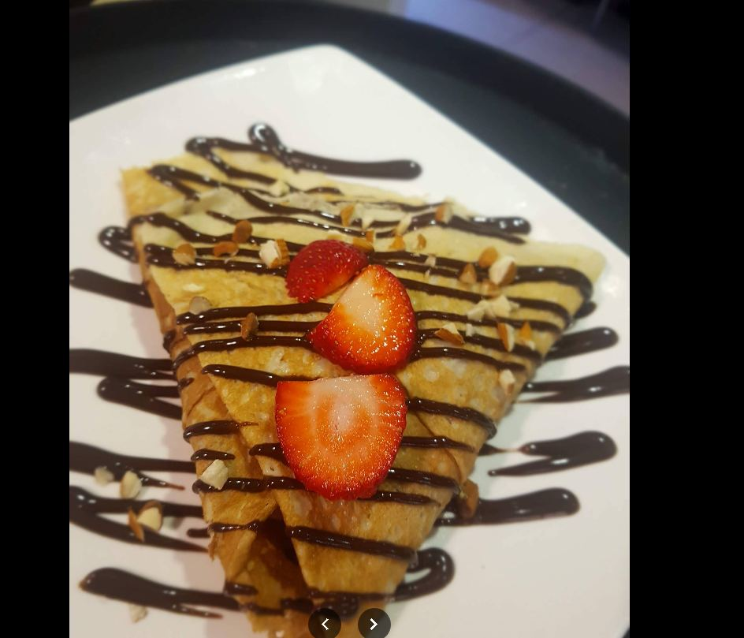
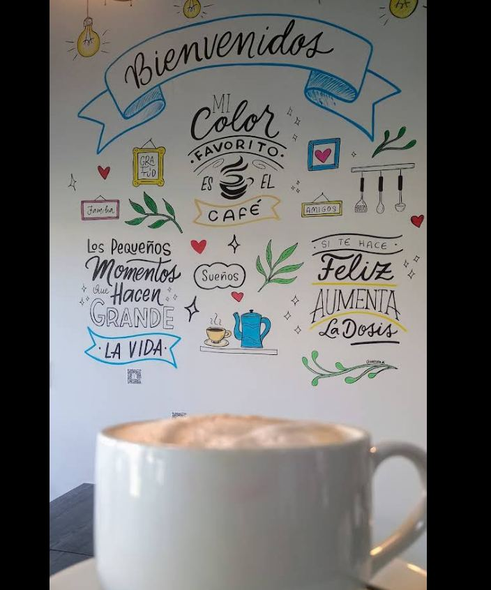

★★★★★
"He ido al lugar a tomar desayuno en diversas ocasiones. La comida es bastante buena y generosa, en mi opinión el café bombón estaba muy dulce esta vez."

Café de especialidad y crêpes & waffles dulces y salados, en un local pensado para quedarse un buen rato — con despacho y retiro en tienda.
Grano seleccionado, preparaciones clásicas y frías — del espresso simple al iced mocca latte.
Dulces y salados, la firma de la casa — de la Dulce Pecado al Eby Crêpe con camarones.
Terraza, buena luz y ambiente relajado — tan bueno para desayunar solo como para ir en grupo.

4.7
172 reseñas en Google
En Pecados esa frase está pintada a mano en la pared de entrada, junto a un "Bienvenidos" y la idea que resume el local: los pequeños momentos son los que hacen grande la vida. Café de especialidad, crêpes y waffles dulces y salados, y un espacio pensado para desayunar solo, trabajar con el computador o juntarse en grupo.
Esa misma calidez es la que sus clientes destacan en Google: "la comida es riquísima y fresca, los cafés nada que decir, un 7, y por precio está increíble."
4.7 / 5 · 172 opiniones en Google Maps
"He ido al lugar a tomar desayuno en diversas ocasiones. La comida es bastante buena y generosa, en mi opinión el café bombón estaba muy dulce esta vez."
"De verdad, de verdad vayan a este local si quieren pasar un agradable rato con su persona favorita, la comida es riquísima y fresca, los cafés nada que decir, un 7 y por precio está increíble. "
"Fui por un capuccino, hace tiempo quería ir, tentado por una publicación de ellos mismos en su Instagram, me equivoqué y pedí un café helado con crema encima y me sorprendió. Recomiendo no agregar la azúcar, pues el sabor estaba exquisito."
Av. Domingo Santa María N°4084, Local 4, Renca, Región Metropolitana
Lunes a viernes 9:30 – 18:30
Sábado y domingo: por confirmar con el local
* El WhatsApp aún no está confirmado por el local — el número que se usa es el teléfono fijo real de la ficha de Google Maps. Confirmar con el cliente antes de publicar.